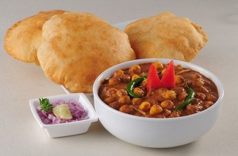
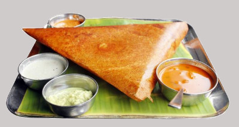
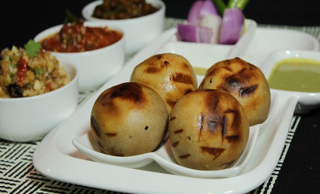
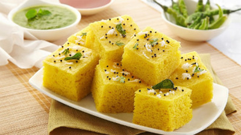

Chole bhature is a combination of chana masala (spicy chickpeas) and fried bread called bhatoora made from maida flour soft wheat) from the Punjab of India and Pakistan. Chole bhature is a woeld famous recipe from the Punjabi cuisine. Chole is a spicy curry made from white chickpeas where as Bhatura is a fried leavened bread.It is usually eaten as breakfast, sometimes accompanied with Lassi
. Chole bhatura is served with onions, carrot pickle, green chutney and achaar. Bhatura chole is popular around north-west India.
Watch video
Masala dosa is a variant of the popular South Indian food dosa, which has its origins in tulu Mangalorean cuisine made popular by the udupi hotels all over India . It is made from rice, lentils, potato, methi and curry leaves, and, served with chutneys and sambar. Though it was only popular in South India, it can be found in all other parts of the country and overseas
. In South India, preparation of masala dosa varies from city to city.
Typical ingredients include rice, husked black gram, mustard seeds, fenugreek seeds, salt, vegetable oil, potatoes, onion, green chillies, curry leaves, and turmeric.
Watch video
Litti, along with chokha, is a complete meal originated from the Indian subcontinent; and popular in Indian states of Eastern Uttar Pradesh as well as Nepalese stase of Madhesh. It is a dough ball made up of whole wheat flour and stuffed with Sattu (roasted chickpea flour) mixed with herbs and spices and then roasted over coal or cow dung cakes or wood then it is tossed with lots of ghee. Although very often confused with the closely related Baati, it is a completely different dish in terms of taste' texture and preparation.It may be eaten with yogurt, baigan bharta, alu bharta, and papad
. The litti are traditonally baked over a cow-dung fire, but in modern day a new fired version has been developed.
Herbs and spices used to flavour the Litti include Onion, garlic, ginger, coriander leaves, lime juice, carom seeds, nigella seeds and salt. Tasty pickles can also be used to add spice flavour. In western Bihar and eastern Uttar Pradesh Litti is served with chokha
Watch video
Dhokla is a vegetatrian food item that originates from the Indian state of Gujarat. It is made with a fermented batter derived from rice and split chickpeas. Dhokla can be eaten for breakfast, as a main course, as a side dish, or as a snack. Dhokla is very similar to Khaman, and the terms are frequently used interchangeably
Watch video
Copyright © 2017 Food king. All rights reserved.